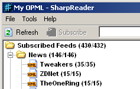

Eindelijk! RSS in Windows
donderdag 1 mei 2003 | Nerdisme
Eindelijk is er een deftige stand-alone RSS reader voor Windows! Say hello to Sharpreader! Nu kan ik eindelijk die buggy Feedreader aan de deur zetten… Enfin, ik gebruikte hem eigenlijk al lang niet meer.
Neem ook eens een kijkje naar versie II van de Fuckhedz XUL Channels: een on-line RSS reader met toekomst, als je ‘t mij vraagt. Let op: een browser met de Gecko engine (Mozilla, Firebird, Netscape, Galleon) is vereist.

Wouter Demuynck op 1 mei 2003
Heb em een tijdje geleden eens een paar dagen geprobeerd, maar het beviel me niet echt. Daarna maar weer op Syndirella overgeschakeld.
Wat ik wel goed vind, is dat berichten die naar elkaar verwijzen in een threaded vorm worden weergegeven.